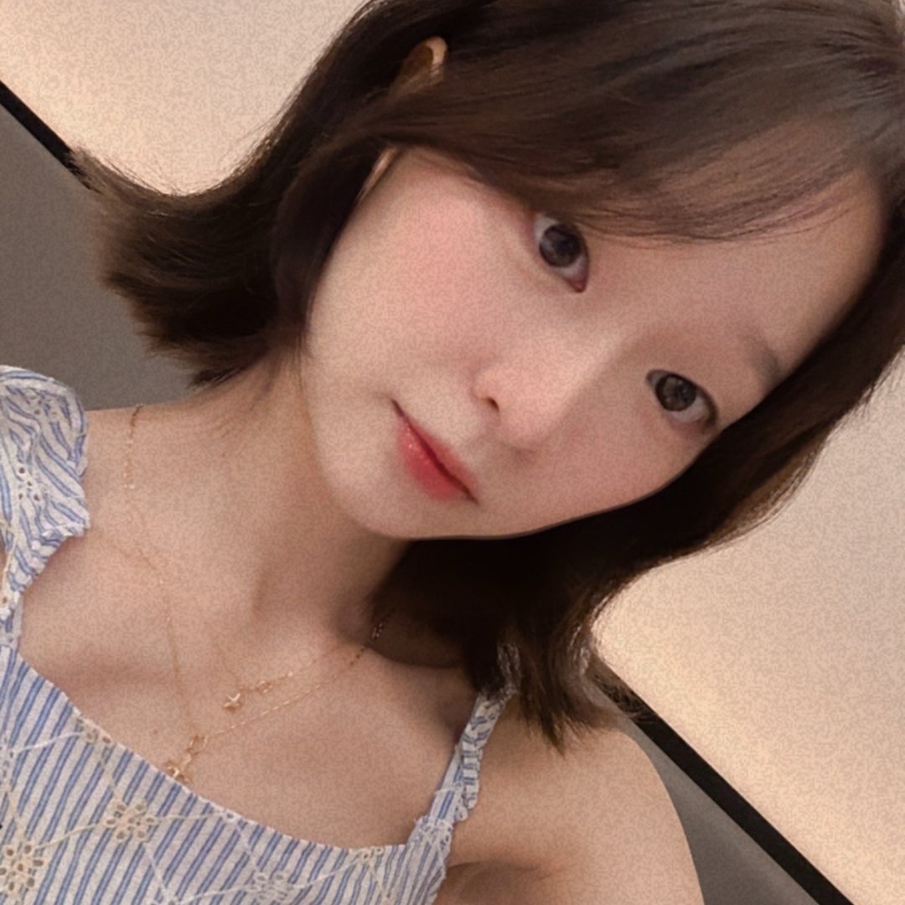
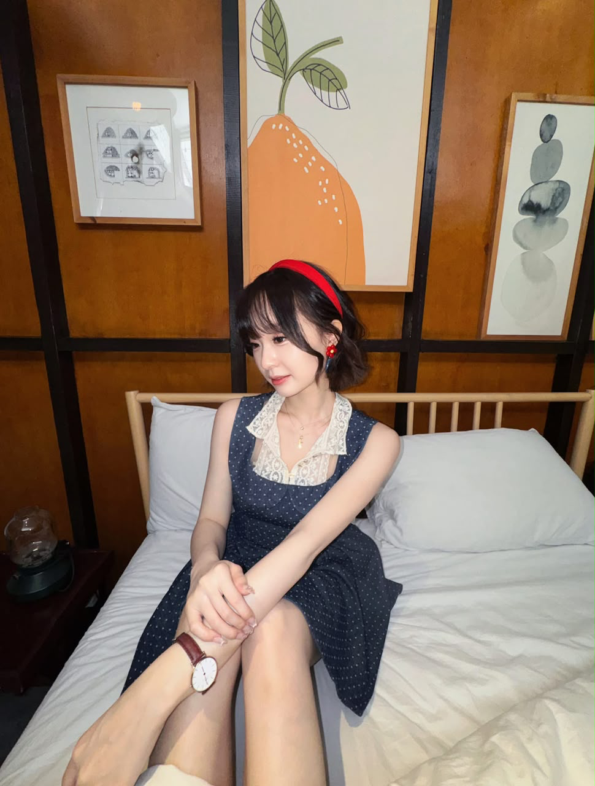

JOANNE FU · 符涵芊 · FAN COMMUNITY
因为是你，所以每一刻都值得珍藏
Joanne Knights 佐安骑士团
有些相遇，是从一次心动开始。
有些喜欢，则慢慢变成了长久的陪伴。
因为
Joanne，我们从不同的地方相遇，在同一份喜欢里，找到了属于彼此的温暖。
这里收藏着每一份真诚的心意，也记录着我们一起走过的闪耀时光。
愿未来的每一个舞台，都有掌声、有鲜花，也有我们温柔而坚定的支持。
MALAYSIA · WITH LOVE, ALWAYS

JOANNE KNIGHTS ✦
把喜欢，变成陪伴
01 / OUR LITTLE WORLD
ONE JOANNE,
THOUSAND KNIGHTS
在这个世界上，每个人都有属于自己的生活轨迹，也有各自珍藏的美好。
而我们，因为同一个名字Joanne，走到了一起。
也许我们来自不同的城市，有着不同的故事，从未真正见过彼此。但因为对
Joanne
的喜欢，让原本陌生的我们，有了共同的期待，也拥有了一份特别的归属感。
从第一次被她的笑容打动，到每一次为她的成长感到骄傲；从屏幕前默默的支持，到一起筹备每一场充满心意的应援，我们将无数微小的喜欢，慢慢汇聚成温暖而坚定的力量。
02 / FAN PROJECTS
把心意，汇成光。
下一份心意，正在酝酿
目前暂无已公布的应援活动。活动详情与参与方式将在确认后更新。
